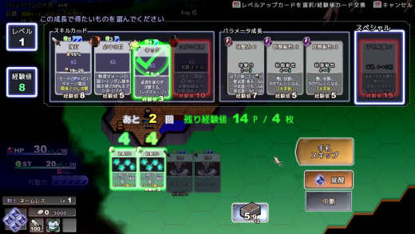

■2018-09-29 (土) 片道勇者2【28】新LvUP画面▼

※レベルアップ画面 仮バージョン
引き続き「新レベルアップ処理」の作成を進めています。
次からは基本的に「特定の場所でまとめてレベルアップする」ようになるので、
それに向けての大調整、というか作り直しを行いました。
まだバグだらけですがおおざっぱには動くようになりまして、
ひとまず現段階では以下の仕様になりそうです。
●レベルアップは、ランダムで選ばれた8択から成長を選んでいく。
今のところスキル4種、パラメータ成長3つ、スペシャル1つです。
この一覧はレベルアップ画面が終了するまで変わりません。
（開始時に一覧を見てから1回再シャッフルできる機能なども付ける予定です）
●レベルアップ中は「手札の入れ替え」ないし「成長の選択」を
一定回数だけおこなうことができる。
「手札に来た経験値の合計」の範囲内で成長を1つ選べます。
成長を選ぶと使用された経験値は消え、次の手札へ入れ替わります。
同じ成長は1回しか選べません。
●レベルアップ時の手札に「常備カード」が入らなくなる。
アルファ1で気になっていた点の一つとして、
「盾を装備して常備カード【盾防御】を得ている」などにより
手札の常備カードが増えていた場合、その分だけ
山札から引ける枚数が減ってしまうため、
取れる経験値カードが減って成長がしにくくなるという問題がありました。
今度からのレベルアップ画面はマップ移動時とは別の専用処理になるので、
手札は全部「山札から引いたもの」となり、常備カードの影響を受けなくなります。
これで移動時に気兼ねなく盾を装備できます。
●「覚醒」を使えば山札から3枚追加で引ける。
ただ3枚引いても意外と経験値が引けないので、
経験値が最低1枚は確定で取れるようにしようかなと思っています。
●最終的に、取れた成長項目の数だけレベルアップする。
たとえば3つ取れたらレベルが1 → 4に上がります。
レベルが一定に達したら追加のボーナスが選べたりするのも面白そうです。
●不幸なことがあったら何らかのボーナスが得られるようにする。
手札に経験値が1枚も来なかったら経験値ボーナスがもらえるとか、
最終的に一回も成長できなかったら大きめの経験値カードが1枚プレゼントされるなど、
うまくいかなった場合のボーナスも付けようと思っています。
何もできなかったときのションボリ感といったら！
将来的にさらなるオプションやら何やら付く可能性はありますが、
ひとまず基本はこんな感じになりそうです。
実際試してみた感じだと、一気に色々成長できるので
「強くなった結果を試したい」感は以前よりも強く味わえそうです。
あと特定場所でレベルアップするので、
「レベルアップを忘れなくなる」というのは一番重要な利点ですね。
一方で、レベルアップ地点を逃すと辛くなるので、
レベルアップ地点の頻度や見つけやすくするための補助、
レベルアップ地点に行けなかったときの補填などの検討も含めて、
そのあたり色々とサポートを考える必要が必要そうです。
2018-09-29 (土)  カテゴリ: 片道勇者2
カテゴリ: 片道勇者2
 カテゴリ: 片道勇者2
カテゴリ: 片道勇者2